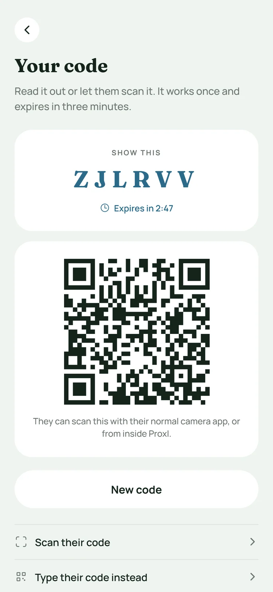
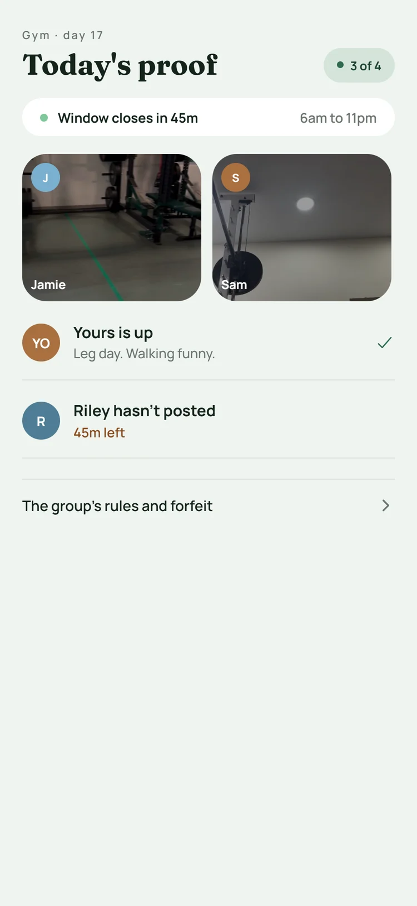
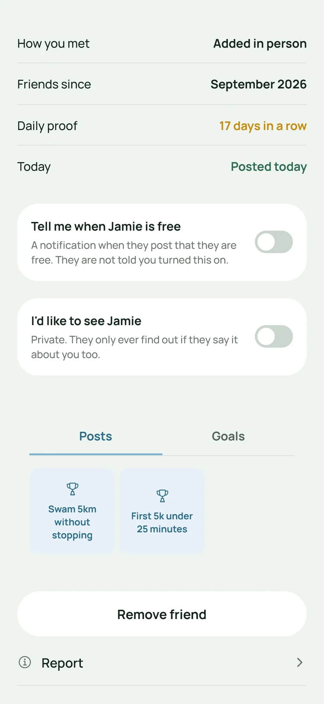
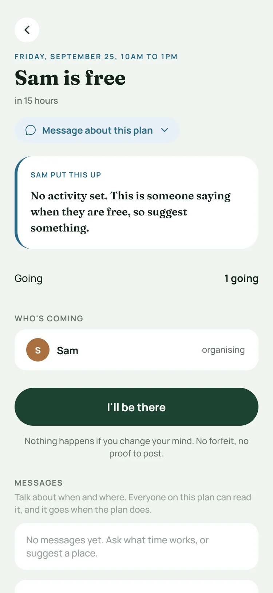
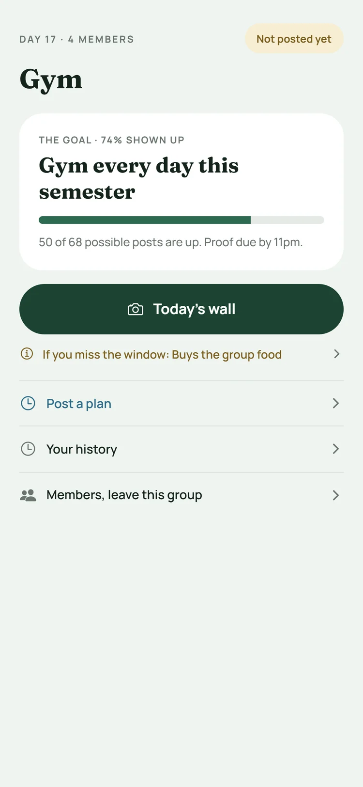
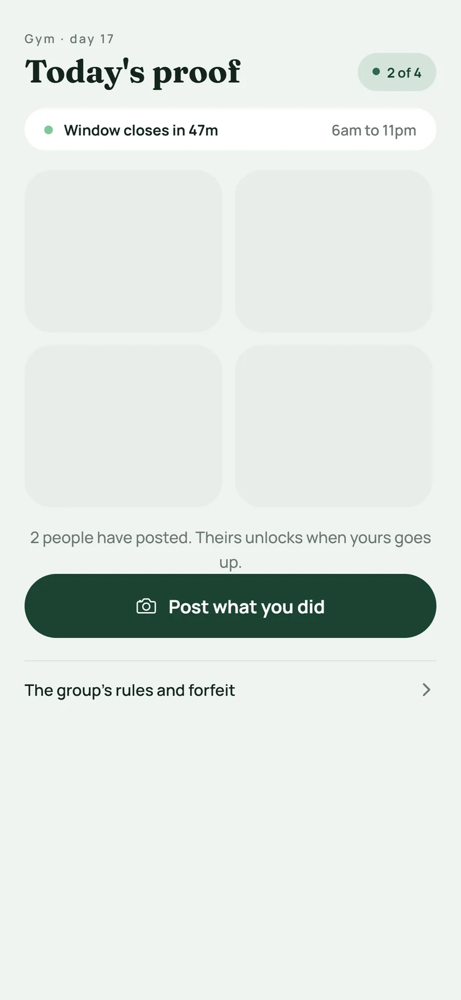
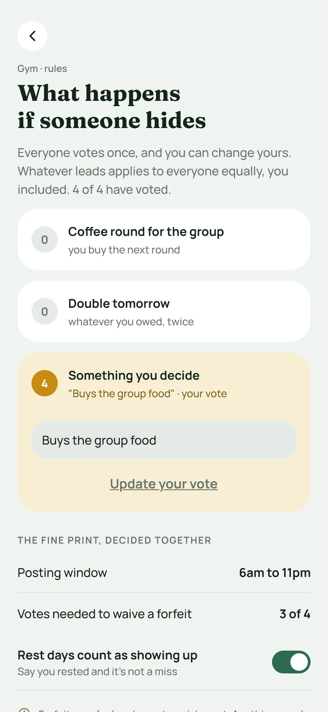

Just met someone? Swap codes in person.
Show your code or scan theirs. It works once and expires in three minutes, so your list stays people you have actually met.
Online adds are capped at fifteen.

ProxI turns the people you just met into real friends, and turns "we should hang out sometime" into an actual plan.

You see your friends' posts every day. You see your friends a few times a year. ProxI is built for the second part.
see three or fewer of the people who fill their feed in real life.
described feeling close as being together in person. A lot of it was over food.
put Instagram in their top three apps. Being online together was never the problem.
ProxI student survey, September 2026.
Most new connections die after the add. ProxI keeps them going until you actually hang out.
Show your code or scan theirs. It works once and expires in three minutes, so your list stays people you have actually met.
Online adds are capped at fifteen.

On their profile, the things you have in common light up. Tap one and the plan already knows what it is for.
No staring at a blank message.
Mark someone you would like to see. They only find out if they mark you too, and then you are both told at the same moment.
No counts, no hints, no left on read.

Tap "I'm free now" and your friends see it for the next two hours. Or post a time later in the week.
You choose who hears about it.
Every plan has its own messages for where and when, and they go away when the plan does.
Changed your mind? Nothing happens.

Start a group with the friends you do things with, and make plans together. Into the same thing, like the gym? Add a daily challenge if you want one.
Your team, your roommates, your running crew. Anyone in the group can post a plan, and everyone sees it.
Up to five groups.

If you are all working on the same thing, turn on a daily challenge. Everyone's post stays locked until yours is up.
Completely optional.

Just a photo, a video or a note. No logging, no counting, no spreadsheets.
Your friends react, you keep going.
Groups with a challenge vote on a forfeit, like buying the group food. Missed for a good reason? Two thirds of the group can waive it.
ProxI never handles money.

No swiping.
No follower counts.
No algorithm.
Just your people.
ProxI is for people you know, so it is built to show as little as possible and never more than you chose.
No advertising, no ad identifiers, and your data is never sold.
No analytics or crash-tracking SDKs watching how you use the app.
Show each part of your profile to everyone, to friends, or only to you.
Every post, plan, message and profile can be reported, and reports are reviewed within 24 hours.
Everyone confirms they are 13 or older when they sign up.
Delete your account from inside the app, and your login, profile and photos go with it.
Yes. It is free on the App Store, with no ads and no subscriptions.
Yes, and that is the point. ProxI is built for people you already know, so it gets better with every friend you bring. Start a group and share its invite link, or trade codes in person.
No. There is no public feed, no follower counts and no algorithm. It is built around a small group and the friends you have actually met, and online friend adds are capped at fifteen.
No. It is for friends: the ones you have, and the people you just met and want to see again.
Only if your group decides it should. A forfeit is whatever your group votes for, like buying everyone food. ProxI never handles money.
Ask the group to waive it. Everyone votes, and if two thirds agree, the forfeit is waived.
Never. They only find out you marked them if they mark you too. Otherwise nobody is told, and there are no counts or hints.
Not yet. ProxI is on iPhone first. Email us and we will tell you if that changes.
Bring the people you care about into one small app, and start seeing them again.